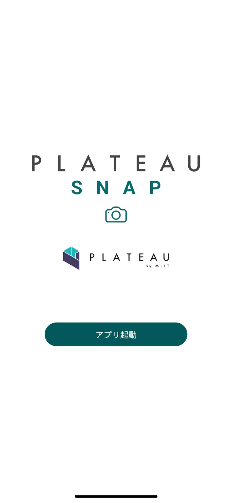
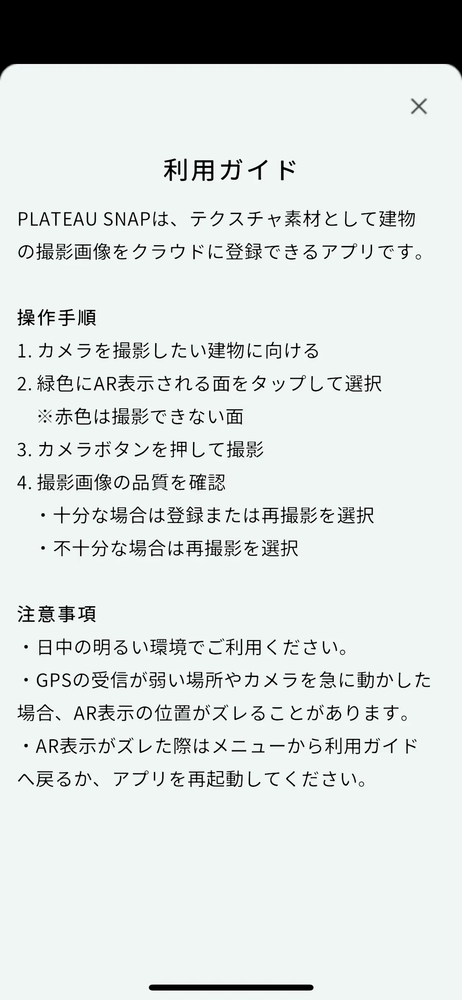
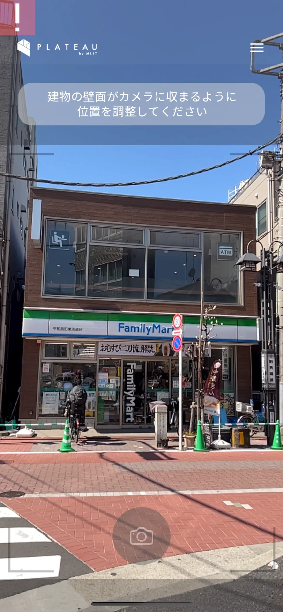
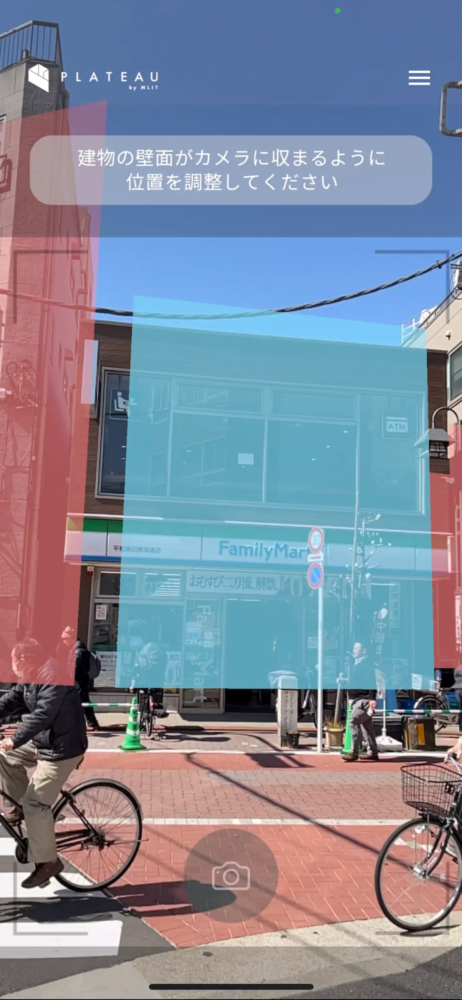
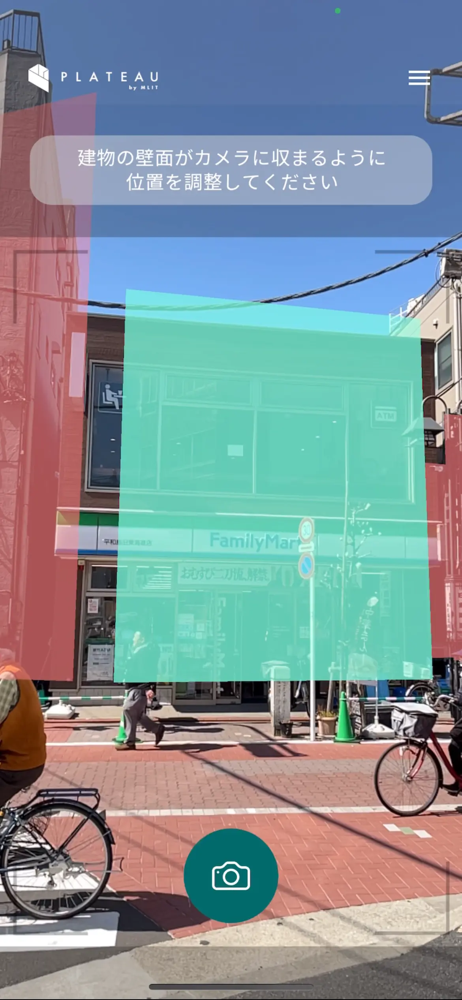
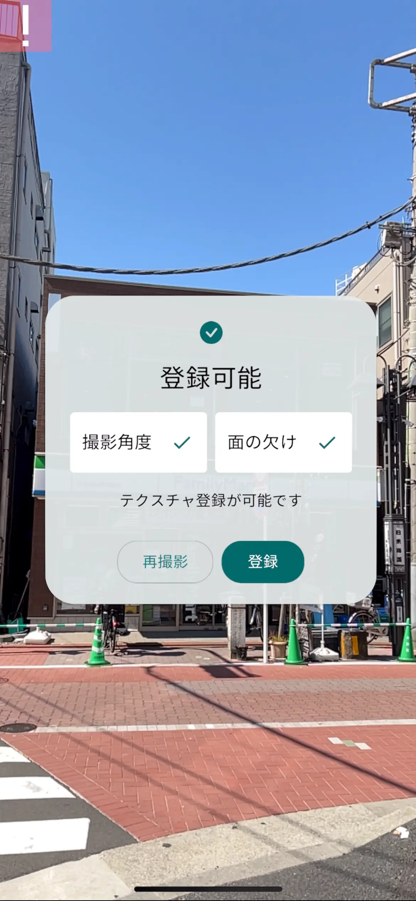
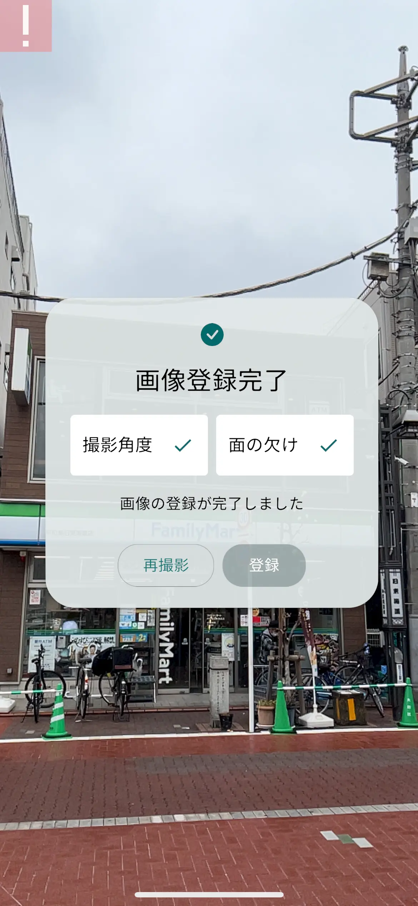

アプリ利用者向け情報
本アプリは、カメラ画像を用いたVPS（Visual Positioning System）により端末の「位置」と「向き（姿勢）」を推定し、現実の建物に合わせてPLATEAUの3Dモデルを重ねて表示します。
※VPS: カメラで捉えた景色を参照データと照合することで、GPSが苦手な屋内やビルの多い場所でも「今どこにいるか」「どちらを向いているか」を推定する技術です。
利用中は画面に集中しやすいため、周囲をよく確認し、身の安全の確保と周辺の方への配慮をお願いします。
- 歩きながら/車道の近くでの操作は避け、安全な場所に立ち止まって操作をする（車・自転車との接触防止）
- 周囲の人や障害物に注意して、衝突や転倒を避ける
- 撮影時は周囲の方の映り込みに配慮し、個人情報が不要に写り込まないようにする
操作手順の概要
- カメラを撮影したい建物に向ける
- 青色にAR表示される面をタップして選択 ※赤色は撮影できない面
- カメラボタンを押して撮影
- 撮影画像の品質を確認 ・十分な場合は登録または再撮影を選択 ・不十分な場合は再撮影を選択
アプリの利用を開始する（事前準備）
本アプリの入手方法について
- PLATEAU SNAP 関連の GitHub リポジトリは複数存在しますが、
アプリ利用者がインストールする対象は「PLATEAU-SNAP-App」リポジトリです。 - フロントエンドアプリ（本アプリ）
[https://github.com/Project-PLATEAU/PLATEAU-SNAP-App]
- サーバー側リポジトリ（利用者はインストール不要）
[https://github.com/Project-PLATEAU/PLATEAU-SNAP-Server]
必要環境（推奨スペック）
- 本アプリは AR（拡張現実）機能を使用します。
- 対応端末：ARKit / ARCore 対応スマートフォン
- iOS：iOS 16
- カメラ機能・位置情報機能が利用可能であること
GitHub からのインストール方法
- 本アプリは Unity プロジェクトとして提供されています。
- GitHub からリポジトリを取得します。
git clone https://github.com/Project-PLATEAU/PLATEAU-SNAP-App.git
- Unity 2022.3.44f1 以上でプロジェクトを開きます（対応バージョンは開発者向け情報 を参照）
- 開発者向け情報タブに従い、以下を設定します。
- APIキー設定
- ARCore設定
- ビルド設定
- 設定完了後、iOS用にビルドします。
- 既にビルド済みアプリが配布されている場合は、配布元の手順に従ってインストールしてください。
アプリの利用を開始する
- アプリを起動すると、メイン画面が表示されます
アプリ起動ボタンを押下してアプリを開始します

利用ガイドを読む
- 利用ガイドが表示されるため、使い方を確認します
- 確認したら、画面右上の
☓ボタンを押下して利用ガイドを閉じます

各種アクセスを許可する（初回のみ）
- 初回起動時のみ、カメラや位置情報の使用に関する許可を求められます。表示に従って
許可してください。
カメラの許可（例）
「snap.sample」がカメラへのアクセスを求めています
建物検出機能に使用します
[許可しない][OK]
位置情報の許可（例）
「snap.sample」に位置情報の使用を許可しますか？
建物検出機能に使用します
[1度だけ許可]
[Appの使用中は許可]（推奨）
[許可しない]
位置姿勢の取得のために、建物の周辺を撮影する
- 利用ガイドを閉じると
建物検出画面が表示されます - 位置・向き（姿勢）の情報を取得するために、該当の建物やその場所から見える周辺の道路・建物等をカメラに写して下さい

Tip
VPSの精度を良くするために、以下の点を意識して撮影して下さい。
- iPhone をゆっくり左右に移動し、少しずつ角度を変えて撮影する（急な回転・ブレを避ける）
- 建物の角・窓・看板など、特徴のある部分が画面に入るようにする
- 暗すぎる/逆光になりすぎる状況は避け、明るい環境で撮影する
- 反射の強いガラス面や、単色の壁面だけが大きく写る状態は避ける
- 人や車など動く物体が画面の大半を占めないようにする
- カメラレンズの汚れを拭き、ピントが合っていることを確認する
面をAR表示する
- 位置情報の精度が十分になると、カメラで映している建物に沿って赤や青の面が表示されます

Tip
以下の点に注意してカメラで建物の面を写すと、赤色(撮影不可)から青色(撮影可能)に変わります。
- 撮影角度
- 青色(撮影可能): 面に対して正面から撮影できている
- 赤色(撮影不可): 面に対して斜めから撮影してしまっている
- 面の欠け
- 青色(撮影可能): 面の全ての頂点がカメラに映っている
- 赤色(撮影不可): 面の一部または全ての頂点がカメラからはみ出てしまっている
面を選択する
- 前記の手順で青色になった面はタップで選択可能です
- 青色になった面をタップして選択します
- 選択された面は緑色に変わります

撮影する
- 面を選択すると画面下中央の
撮影ボタンが押せるようになります 撮影ボタンを押下して建物を撮影します
判定する
撮影ボタンで撮影するとダイアログが表示され以下の判定が行われます- 撮影角度
- 建物の面が正面から撮影されているか
- 面の欠け
- 建物の面の頂点が全て画像に含まれている

画像を登録する
撮影角度と面の欠けの両方が問題なければ登録ボタンが選択できるようになります撮影角度と面の欠けの両方、またはいずれかの条件が満たされていない場合は再撮影ボタンを押下して、再度撮影を行なって下さい登録ボタンが押せる場合は、登録ボタンを押下するとサーバーへ撮影した画像が送信され登録されます- 問題なく送信が完了すると自動的にダイアログが閉じます
- 登録の処理に問題が発生した場合はエラーメッセージが表示されるので再度
登録ボタンを選択して下さい

この後は、PLATEAU-SNAP-CMS を用いて、撮影・登録した画像を3Dモデルへ適用することができます。詳細な手順については、PLATEAU-SNAP-CMS のドキュメントをご参照ください。
補足事項
最初からやり直す（リセット）
画面上のリセットボタンを選択すると、現在表示している面や位置合わせの状態をクリアし、最初から操作をやり直すことができます。 位置合わせがうまくいかない場合や、多くの面が表示されてしまい、撮影対象の面が分からなくなってしまった場合などに使用してください。